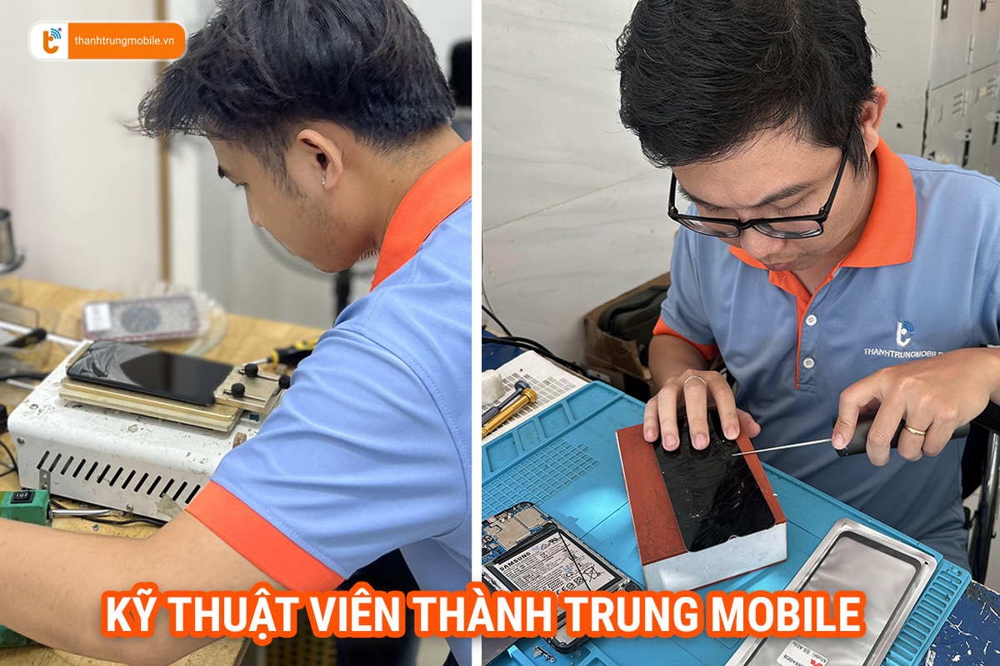

Thành Trung Mobile - Trung tâm sửa chữa điện thoại Vivo uy tín tại TP.HCM
Ngày nay, điện thoại Vivo đã trở thành người bạn đồng hành quen thuộc với nhiều người dùng. Tuy nhiên, trong quá trình sử dụng, việc gặp phải lỗi kỹ thuật là điều khó tránh khỏi. Khi đó, bạn cần tìm đến một trung tâm sửa chữa chuyên nghiệp để khắc phục nhanh chóng và hiệu quả. Thành Trung Mobile tự hào là một trong những đơn vị hàng đầu tại TP.HCM, chuyên cung cấp dịch vụ sửa điện thoại Vivo với đội ngũ kỹ thuật viên giàu kinh nghiệm và quy trình minh bạch.

Bảng giá sửa chữa điện thoại Vivo tại Thành Trung Mobile
Thành Trung Mobile cam kết cung cấp dịch vụ sửa chữa điện thoại Vivo với mức giá cạnh tranh, minh bạch và hợp lý. Dưới đây là bảng giá tham khảo cho các dịch vụ sửa chữa phổ biến:
| Dịch vụ | Giá (VND) | Thời gian bảo hành |
|---|---|---|
| Thay màn hình Vivo | Từ 700.000 | 6 tháng |
| Thay pin Vivo | Từ 300.000 | 3 tháng |
| Ép kính Vivo | Từ 300.000 | 12 tháng |
| Sửa lỗi phần mềm Vivo | Từ 150.000 | Không có bảo hành |
Những lỗi phổ biến trên điện thoại Vivo
Điện thoại Vivo có nhiều ưu điểm vượt trội, nhưng cũng dễ gặp phải một số vấn đề kỹ thuật trong quá trình sử dụng. Dưới đây là những lỗi phổ biến mà nhiều khách hàng của Thành Trung Mobile đã gặp phải:
- Màn hình bị liệt cảm ứng: Đây là một trong những lỗi thường gặp nhất, đặc biệt trên các dòng Vivo có màn hình cảm ứng lớn.
- Pin chai, sạc không vào: Pin nhanh hết, hoặc điện thoại sạc không vào điện là dấu hiệu cần thay pin.
- Camera bị mờ hoặc không hoạt động: Camera là một tính năng quan trọng nhưng đôi khi gặp vấn đề sau thời gian dài sử dụng.
- Lỗi phần mềm, treo máy: Điện thoại bị treo logo, khởi động lại liên tục do lỗi phần mềm.
Tại sao chọn Thành Trung Mobile để sửa điện thoại Vivo tại TP.HCM?
Kinh nghiệm và chuyên môn hàng đầu
Với hơn 15 năm kinh nghiệm trong lĩnh vực sửa chữa điện thoại, Thành Trung Mobile sở hữu đội ngũ kỹ thuật viên giàu kinh nghiệm, am hiểu sâu về các dòng máy Vivo. Tất cả các kỹ thuật viên đều được đào tạo chuyên sâu và thường xuyên cập nhật kiến thức mới nhất về công nghệ.
Linh kiện chính hãng và quy trình sửa chữa minh bạch
Thành Trung Mobile cam kết sử dụng linh kiện chính hãng cho mọi dịch vụ sửa chữa. Từ việc thay thế màn hình, pin, đến sửa chữa phần mềm, mọi quy trình đều minh bạch, được thông báo rõ ràng cho khách hàng trước khi tiến hành.
Chế độ bảo hành uy tín
Tất cả các dịch vụ tại đây đều có chế độ bảo hành dài hạn, đảm bảo sự yên tâm cho khách hàng sau khi sửa chữa. Nếu có bất kỳ vấn đề nào phát sinh sau khi sửa chữa, bạn hoàn toàn có thể mang máy đến để được hỗ trợ miễn phí.
Quy trình sửa chữa điện thoại Vivo tại Thành Trung Mobile
Quy trình sửa chữa điện thoại Vivo tại Thành Trung Mobile diễn ra chuyên nghiệp, bao gồm các bước sau:
- Tiếp nhận máy: Kỹ thuật viên tiếp nhận máy, kiểm tra và chẩn đoán lỗi.
- Tư vấn giải pháp: Sau khi kiểm tra, khách hàng sẽ được tư vấn chi tiết về tình trạng của máy và phương án sửa chữa.
- Tiến hành sửa chữa: Sau khi được sự đồng ý của khách hàng, kỹ thuật viên sẽ tiến hành sửa chữa nhanh chóng.
- Kiểm tra và bàn giao: Sau khi sửa xong, máy sẽ được kiểm tra lại kỹ lưỡng trước khi bàn giao cho khách hàng.
Cảm nhận của khách hàng về dịch vụ sửa điện thoại Vivo tại Thành Trung Mobile
Rất nhiều khách hàng đã tin tưởng và lựa chọn Thành Trung Mobile là nơi sửa chữa điện thoại Vivo của mình. Một trong những phản hồi tích cực là từ anh Nguyễn Văn Tài: "Tôi rất hài lòng với dịch vụ tại đây. Điện thoại Vivo của tôi bị chai pin và đã được thay mới nhanh chóng. Đội ngũ kỹ thuật rất tận tình và chi phí hợp lý."
Lợi ích khi sửa điện thoại Vivo tại Thành Trung Mobile
- Thời gian sửa chữa nhanh chóng: Giúp bạn sớm khôi phục lại trạng thái hoạt động của máy mà không phải chờ đợi lâu.
- Giá cả hợp lý: Thành Trung Mobile luôn đưa ra mức giá cạnh tranh và phù hợp với chất lượng dịch vụ.
- Chế độ bảo hành dài hạn: Yên tâm hơn với chính sách bảo hành rõ ràng và minh bạch.
- Đội ngũ tư vấn hỗ trợ miễn phí: Kể cả khi bạn không sử dụng dịch vụ, đội ngũ của Thành Trung vẫn sẵn sàng giải đáp mọi thắc mắc về điện thoại Vivo.
Liên hệ ngay để sửa chữa điện thoại Vivo tại TP.HCM
Nếu bạn đang gặp vấn đề với điện thoại Vivo của mình, đừng ngần ngại liên hệ với Thành Trung Mobile ngay hôm nay để được hỗ trợ. Bạn có thể đến trực tiếp cửa hàng hoặc gọi điện qua hotline để đặt lịch và nhận tư vấn miễn phí.
- Địa chỉ: 24 Trần Văn Kiểu P10, Q6 TP.HCM
- Hotline: 0909.650.650